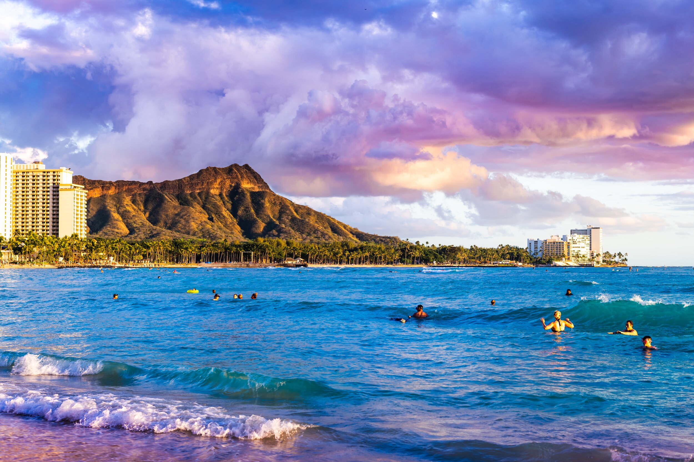
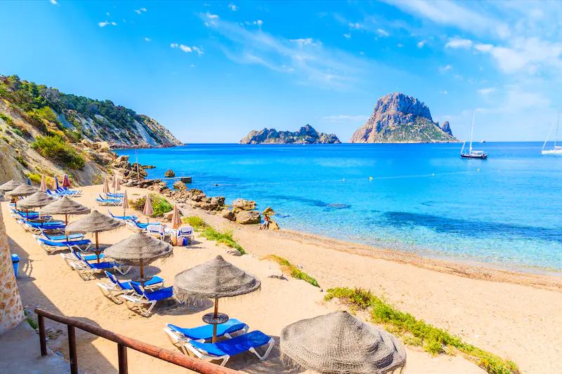

Plan Your Journey
Have Fun in Hawaii
Tourism is an important part of the Hawaiian economy as it represents ¼ of the economy. According to the Hawaii Tourism: 2019 Annual Visitor Research Report, a total of 10,386,673 visitors arrived in 2019 which increased 5% from the previous year, with expenditures of almost $18 billion.
Have Fun in Ibiza
Ibiza is considered to be a popular tourist destination, especially due to its well-known and at times riotous nightclub-based nightlife centred on two areas: Ibiza Town, the island's capital on the southern shore and Sant Antoni to the west. Ibiza has garnered the reputation as the "Party Capital of the world"
Have Fun in Hawai

Sharm El Sheikh's major industry is foreign and domestic tourism, owing to its landscape, year-round dry climate with long hot summers and warm winters and its long beaches. Its waters are clear and calm for most of the year[citation needed] and have become popular for various watersports, particularly recreational scuba diving and snorkeling.